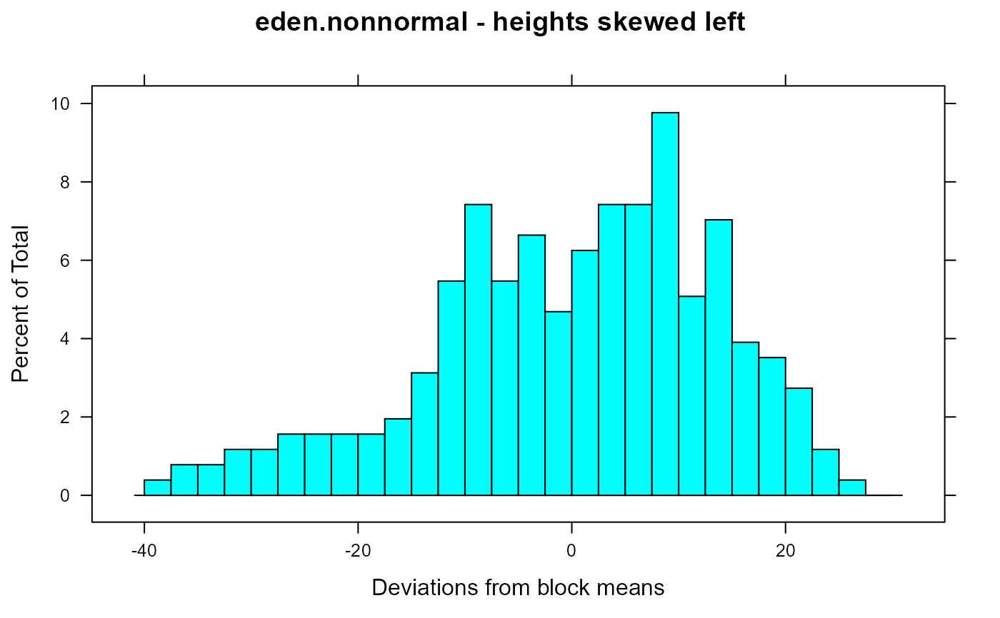
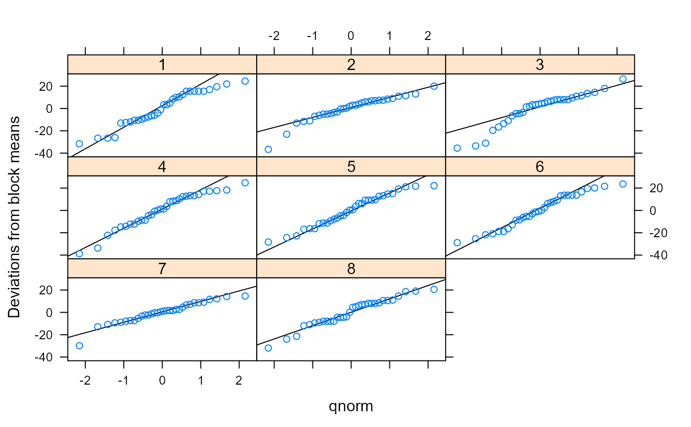

Height of barley plants in a study of non-normal data
eden.nonnormal.RdHeight of barley plants in a study of non-normal data.
data("eden.nonnormal")
Format
A data frame with 256 observations on the following 3 variables.
posposition within block
blockblock (numeric)
heightheight of wheat plant
Details
This data was used in a very early example of a permutation test.
Eden & Yates used this data to consider the impact of non-normal data on the validity of a hypothesis test that assumes normality. They concluded that the skew data did not negatively affect the analysis of variance.
Grown at Rothamsted. Eight blocks of Yeoman II wheat. Sampling of the blocks was quarter-meter rows, four times in each row. Rows were selected at random. Position within the rows was partly controlled to make use of the whole length of the block. Plants at both ends of the sub-unit were measured. Shoot height is measured from ground level to the auricle of the last expanded leaf.
Source
T. Eden, F. Yates (1933). On the validity of Fisher's z test when applied to an actual example of non-normal data. Journal of Agric Science, 23, 6-17. https://doi.org/10.1017/S0021859600052862
References
Kenneth J. Berry, Paul W. Mielke, Jr., Janis E. Johnston Permutation Statistical Methods: An Integrated Approach.
Examples
library(agridat) data(eden.nonnormal) dat <- eden.nonnormal mean(dat$height) # 55.23 matches Eden table 1#> [1] 55.23242# Eden figure 2 libs(dplyr, lattice) # Blocks had different means, so substract block mean from each datum dat <- group_by(dat, block) dat <- mutate(dat, blkmn=mean(height)) dat <- transform(dat, dev=height-blkmn) histogram( ~ dev, data=dat, breaks=seq(from=-40, to=30, by=2.5), xlab="Deviations from block means", main="eden.nonnormal - heights skewed left")# \dontrun{ # calculate skewness, permutation libs(dplyr, lattice, latticeExtra) # Eden table 1 # anova(aov(height ~ factor(block), data=dat)) # Eden table 2,3. Note, this may be a different definition of skewness # than is commonly used today (e.g. e1071::skewness). skew <- function(x){ n <- length(x) x <- x - mean(x) s1 = sum(x) s2 = sum(x^2) s3 = sum(x^3) k3=n/((n-1)*(n-2)) * s3 -3/n*s2*s1 + 2/n^2 * s1^3 return(k3) } # Negative values indicate data are skewed left dat <- group_by(dat, block) summarize(dat, s1=sum(height),s2=sum(height^2), mean2=var(height), k3=skew(height))#>#> # A tibble: 8 x 5 #> block s1 s2 mean2 k3 #> <int> <dbl> <dbl> <dbl> <dbl> #> 1 1 1682 95930. 243. -1269. #> 2 2 1858 111662. 122. -1752. #> 3 3 1810. 108967. 214. -3173. #> 4 4 1912 121748. 242. -2548. #> 5 5 1722 99026. 205. -559. #> 6 6 1339 63077 227. -801. #> 7 7 1963 123052. 85.0 -713. #> 8 8 1854 112366 160. -1062.## block s1 s2 mean2 k3 ## <int> <dbl> <dbl> <dbl> <dbl> ## 1 1 1682.0 95929.5 242.56048 -1268.5210 ## 2 2 1858.0 111661.5 121.97984 -1751.9919 ## 3 3 1809.5 108966.8 214.36064 -3172.5284 ## 4 4 1912.0 121748.5 242.14516 -2548.2194 ## 5 5 1722.0 99026.5 205.20565 -559.0629 ## 6 6 1339.0 63077.0 227.36190 -801.2740 ## 7 7 1963.0 123052.5 84.99093 -713.2595 ## 8 8 1854.0 112366.0 159.67339 -1061.9919 # Another way to view skewness with qq plot. Panel 3 most skewed. qqmath( ~ dev|factor(block), data=dat, as.table=TRUE, ylab="Deviations from block means", panel = function(x, ...) { panel.qqmathline(x, ...) panel.qqmath(x, ...) })# Now, permutation test. # Eden: "By a process of amalgamation the eight sets of 32 observations were # reduced to eight sets of four and the data treated as a potential # layout for a 32-plot trial". dat2 <- transform(dat, grp = rep(1:4, each=8)) dat2 <- aggregate(height ~ grp+block, dat2, sum) dat2$trt <- rep(letters[1:4], 8) dat2$block <- factor(dat2$block) # Treatments were assigned at random 1000 times set.seed(54323) fobs <- rep(NA, 1000) for(i in 1:1000){ # randomize treatments within each block # trick from https://stackoverflow.com/questions/25085537 dat2$trt <- with(dat2, ave(trt, block, FUN = sample)) fobs[i] <- anova(aov(height ~ block + trt, dat2))["trt","F value"] } # F distribution with 3,21 deg freedom # Similar to Eden's figure 4, but on a different horizontal scale xval <- seq(from=0,to=max(fobs), length=50) yval <- df(xval, df1 = 3, df2 = 21) # Re-scale, 10 = max of historgram, 0.7 = max of density histogram( ~ fobs, breaks=xval, xlab="F value", main="Observed (histogram) & theoretical (line) F values") + xyplot((10/.7)* yval ~ xval, type="l", lwd=2)# }